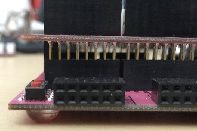
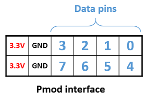
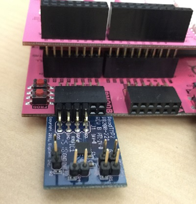
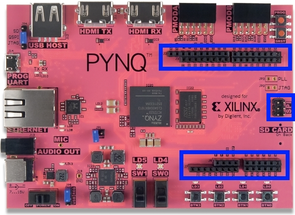
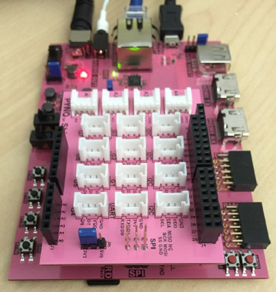
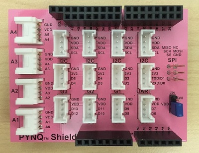
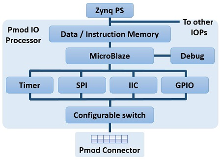
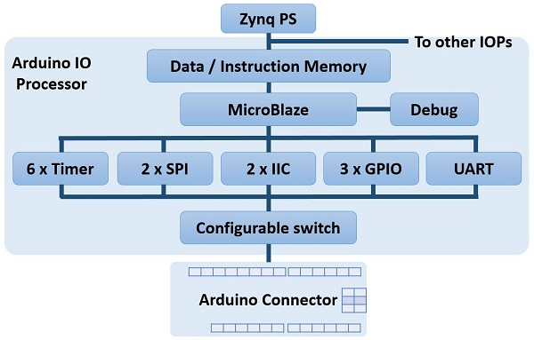

Hardware and Overlays¶
Overlay Concept¶
Zynq provides a processor and FPGA fabric on the same chip.
Overlays, or hardware libraries extend the user application from the PS (Processing System) of the Zynq into the FPGA. This allows software programmers to take advantage of the FPGA fabric to accelerate the application, or to use an overlay to customize the hardware platform for a particular application.
For example, image processing is a typical application where the FPGA can provide acceleration. A software programmer can use a hardware library to run some of the image processing functions (e.g. edge detect, thresholding) on the FPGA fabric. Hardware libraries can be loaded to the FPGA dynamically, as required, just like a software library. Seperate image processing functions could be implemented in different overlays and loaded from Python on demand.
To give another example, for a drone, or robotic application, the PYNQ-Z1 has more pins/interfaces available than a typical embedded platform. A new overlay could be created to customize the hardware interfaces to the new application. Multiple motor controllers and sensor controllers could be implemented in hardware in the new overlay, and connected to the available pins. A software programmer could use the controllers in the overlay through a Python/C API.
Base Overlay¶
The base overlay is the default overlay included with the PYNQ-Z1 image.
This overlay customizes the platform to connect HDMI In and Out controllers, an audio controller (Mic In and Audio Out), and the Pmod and Arduino interfaces (through the IO Processors) to the PS, to allow them to be used from the Pynq environment. There is also a tracebuffer connected to the Pmod, and Arduino interfaces to allow for hardware debug. The user buttons, switches and LEDs are also connected to the PS in the base overlay.

The Pmod and Arduino interfaces have special custom IO Processors that allow a range of peripherals with different IO standards to be connected to the system. This allows a software programmer to use a wide range of peripherals with different interfaces and protocols without needing to create a new FPGA design for each peripheral or set of peripherals.
Pmod Peripherals¶
A Pmod interface is a 12-pin connector that can be used to connect peripherals.
A range of Pmod peripherals are available from Digilent and thrid parties. Typical Pmod peripherals include sensors (voltage, light, temperature), communication interfaces (Ethernet, serial, wifi, bluetooth), and input and output interfaces (buttons, switches, LEDs).
There are two Pmod connectors on PYNQ-Z1.

Supported peripherals¶
A number of peripherals are supported:
- Pmods can be plugged directly into the Pmod port.
- Grove peripherals can be connected to the Pmod port through a PYNQ Grove Adapter.
- Other peripherals can be wired to a Pmod port.
Pmod Connector¶
Each Pmod connector has 12 pins: 2 rows of 6 pins, where each row has 3.3V (VCC), ground (GND) and 4 data pins. This gives 8 data pins in total. Pmod data pins are labelled 0-7 in the image below. The pin number needs to be specified in Python when creating a new instance of a peripheral connected to a port.
Pmods come in different configurations depending on the number of data pins required. e.g. Full single row: 1x6 pins; full double row: 2x6 pins; and partially populated: 2x4 pins.
Pmods that use both rows (e.g. 2x4 pins, 2x6 pins), should usually be aligned to the left of the connector (to align with VCC and GND).
Pmod peripherals with only a single row of pins can be physically plugged into the top row or the bottom row of a Pmod port (again, aligned to VCC/GND). However, if you are using an existing driver/overlay, you will need to check which pins/rows are supported for a given overlay, as not all options may be implemented. e.g. the Pmod ALS is currently only supported on the top row of a Pmod port, not the bottom row.
PYNQ Grove Adapter¶
A Grove connector has four pins, VCC and GND, and two data pins.
The PYNQ Grove Adapter has four connectors (G1 - G4), allowing four Grove devices to be connected to one Pmod port.

All pins operate at 3.3V. Due to different pull-up/pull-down I/O requirements for different peripherals (e.g. IIC requires pull-up, and SPI requires pull-down), Grove peripherals must be plugged into the appropriate connector.
G1 and G2 pins are connected to pins with pull-down resistors, and G3 and G4 are connected to pins with pull-up resistors (IIC), as indicated in the image.

Pmods already take this pull up/down convention into account in their pin layout, so no special attention is required to connect Pmods.
Arduino Peripherals¶
There is one Arduino connector on the board and can be used to connect to arduino compatible shields.
Supported peripherals¶
Most arduino shields can be used with the PYNQ-Z1 board. A PYNQ Shield, is also available, which serves as a bridge to connect multiple Grove peripherals.
Arduino Connector¶
Each Arduino connector has 6 analog pins (A0 - A5), 14 multi-purpose Digital pins (D0 - D13), 2 dedicated I2C pins (SCL, SDA), and 4 dedicated SPI pins.
PYNQ Shield¶
As mentioned previously, each Grove connector has 4 pins. The PYNQ Shield has 12 Grove connectors for digital IO (I2C, UART, G1 - G7) and 4 Grove connectors for analog IO (A1 - A4).
With the PYNQ shield jumper (JP1) set to 3.3V (as in the figure), all the pins operate at 3.3V.
IOPs¶
For overlays to be useful, they must provide sufficient functionality, while also providing flexibility to suit a wide range of applications. Flexibility in the base overlay is demonstrated through the use of IO Processors (IOPs).
An IO Processor is implemented in the programmable logic and connects to and controls an external port on the board. There are two types of IOP: Pmod IOP and Arduino IOP.
Each IOP contains a MicroBlaze processor, a configurable switch, peripherals, and memory for the MicroBlaze instruction and data memory. The memory is dual-ported, with one port connected to the MicroBlaze, and the other connected to the ARM Cortex-A9 processor. This allows the ARM processor to access the MicroBlaze memory and dynamically write a new program to the MicroBlaze instruction area. The data area of the memory can be used for communication and data exchanges between the ARM processor and the IOP(s). e.g. a simple mailbox.
In the base overlay, two IOPs control each of the two Pmod interfaces, and another IOP controls the Arduino interface. Inside the IOP are dedicated peripherals; timers, UART, IIC, SPI, GPIO, and a configurable switch. (Not all peripherals are available in the Pmod IOP.) IIC and SPI are standard interfaces used by many of the available Pmod, Grove and other peripherals. GPIO can be used to connect to custom interfaces or used as simple inputs and outputs. When a Pmod, Arduino shield, or other peripheral is plugged in to a port, the configurable switch allows the signals to be routed dynamically to the required deditcated interface. This is how the IOP provides flexibility and allows peripherals with different pin connections and protocols to be used on the same port.
Pmod IOP¶
Two Pmod IOPs are included in the base overlay to control each of the two Pmod interfaces on the board.
As indicated in the diagram, the Pmod IOP has a MicroBlaze, a configurable switch, and the following peripherals:
- I2C
- SPI
- GPIO blocks
- Timer
Pmod IOP configurable switch¶
The MicroBlaze, inside the IOP, can conifigure the switch by writing to the configuration registers of the switch. This would be done by the MicroBlaze application.
For the Pmod IOP switch, each individual pin can be configured by writing a 4-bit value to the corresponding place in the IO switch configuration registers.
The following function, part of the Pmod IO switch driver, can be used to configure the switch.
void config_pmod_switch();
Switch mappings used for IO switch configuration:
For example:
config_pmod_switch(SS,MOSI,GPIO_2,SPICLK,GPIO_4,GPIO_5,GPIO_6,GPIO_7);
This would connect a SPI interface: * Pin 1: SS * Pin 2: MOSI * Pin 4: SPICLK
and the remaining pins to their corresponding GPIO (which could be left unused in the MicroBlaze application).
From Python all the constants and addresses for the IOP can be found in:
<GitHub Repository>/python/pynq/iop/iop_const.py
pmod.h and pmod.c are part of the Pmod IO switch driver, and contain an API, addresses, and constant definitions that can be used to write code for an IOP.
<GitHub Repository>/Pynq-Z1/vivado/ip/pmod_io_switch_1.0/drivers/pmod_io_switch_v1_0/src/
This code is automatically compiled into the Board Support Package (BSP). Any application linking to the BSP can use this library by including the header file:
#include "pmod_io_switch.h"
Arduino IOP¶
Similar to the Pmod IOP, an Arduino IOP is available to control the Arduino interface. The Arduino IOP is similar to the PMOD IOP, but has some additional internal peripherals (extra timers, an extra I2c, and SPI, a UART, and an XADC). The configurable switch is also different to the Pmod switch.
As indicated in the diagram, the Arduino IOP has a MicroBlaze, a configurable switch, and the following peripherals:
- 2x I2C
- 2x SPI
- 1x UART
- 3x GPIO blocks
- 1x XADC
- 1 Interrupt controller (32 channels)
The interrupt controller can be connected to all the analog and digital pins, and each of the 6 timers, the I2Cs, the SPIs, the XADC, and UART. This means an external pin on the shield interface can trigger an interrupt. An internal peripheral can also trigger an interrupt.
Arduino shields have fixed possible configurations. According to the Arduino specification, the analog pins can be used as analgo, or digital I/O.
Other peripherals can be connected as indicated in the table.
| Peripheral | Pins |
|---|---|
| UART | D0, D1 |
| I2C | A4, A5 |
| SPI* | D10 - D13 |
| PWM | D3, D5, D6, D9, D10, D11 |
| Timer | D3 - D6 and D8 - D11 |
* There are also dedicated pins for a separate SPI.
For example, a shield with a UART and 5 Digital IO can connect the UART to pins D0, D1, and the Digital IO can be connected to pins D2 - D6.
While there is support for analog inputs via the internal XADC, this only allows inputs of 0-1V. The Arduino supports 0-5V analog inputs which are not supported on the PYNQ-Z1.
Arduino IOP configurable Switch¶
The switch can be configured by writing to its configuration registers.
The dedicated SPI pins are always connected to one of the SPI controllers.
The analog and digital pins can be configured by writing a 4-bit value to the corresponding place in the IO switch configuration registers, similar to the Pmod switch.
The following function, part of the Arduino IO switch driver, can be used to configure the switch.
void config_arduino_switch();
Switch mappings used for IO switch configuration:
| Pin Name | A/D IO | A_INT | Interrupt | UART | PWM | Timer | SPI | IIC | Input Capture |
|---|---|---|---|---|---|---|---|---|---|
| A0 | A_GPIO | A_INT | |||||||
| A1 | A_GPIO | A_INT | |||||||
| A2 | A_GPIO | A_INT | |||||||
| A3 | A_GPIO | A_INT | |||||||
| A4 | A_GPIO | A_INT | IIC | ||||||
| A5 | A_GPIO | A_INT | IIC | ||||||
| D0 | D_GPIO | D_INT | D_UART | ||||||
| D1 | D_GPIO | D_INT | D_UART | ||||||
| D2 | D_GPIO | D_INT | |||||||
| D3 | D_GPIO | D_INT | D_PWM0 | D_TIMER (Timer0) | IC (Timer0) | ||||
| D4 | D_GPIO | D_INT | D_TIMER (Timer0_6) | ||||||
| D5 | D_GPIO | D_INT | D_PWM1 | D_TIMER (Timer1) | IC (Timer1) | ||||
| D6 | D_GPIO | D_INT | D_PWM2 | D_TIMER (Timer2) | IC (Timer2) | ||||
| D7 | D_GPIO | D_INT | |||||||
| D8 | D_GPIO | D_INT | D_TIMER (Timer1_7) | Input Capture | |||||
| D9 | D_GPIO | D_INT | D_PWM3 | D_TIMER (Timer3) | IC (Timer3) | ||||
| D10 | D_GPIO | D_INT | D_PWM4 | D_TIMER (Timer4) | D_SS | IC (Timer4) | |||
| D11 | D_GPIO | D_INT | D_PWM5 | D_TIMER (Timer5) | D_MOSI | IC (Timer5) | |||
| D12 | D_GPIO | D_INT | D_MISO | ||||||
| D13 | D_GPIO | D_INT | D_SPICLK |
For example, to connect the UART to D0 and D1, write D_UART to the configuration register for D0 and D1.
config_arduino_switch(A_GPIO, A_GPIO, A_GPIO, A_GPIO, A_GPIO, A_GPIO,
D_UART, D_UART, D_GPIO, D_GPIO, D_GPIO,
D_GPIO, D_GPIO, D_GPIO, D_GPIO,
D_GPIO, D_GPIO, D_GPIO, D_GPIO);
From Python all the constants and addresses for the IOP can be found in:
<Pynq GitHub Repository>/python/pynq/iop/iop_const.py
arduino.h and arduino.c are part of the Arduino IO switch driver, and contain an API, addresses, and constant definitions that can be used to write code for an IOP.
<GitHub Repository>/Pynq-Z1/vivado/ip/arduino_io_switch_1.0/drivers/arduino_io_switch_v1_0/src/
This code this automatically compiled into the Board Support Package (BSP). Any application linking to the BSP can use this library by including the header file:
#include "arduino_io_switch.h"